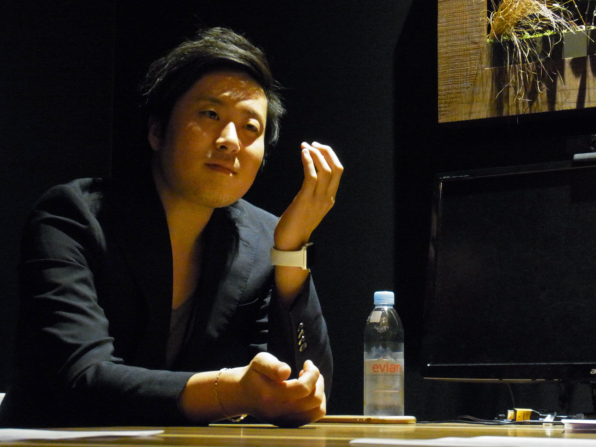
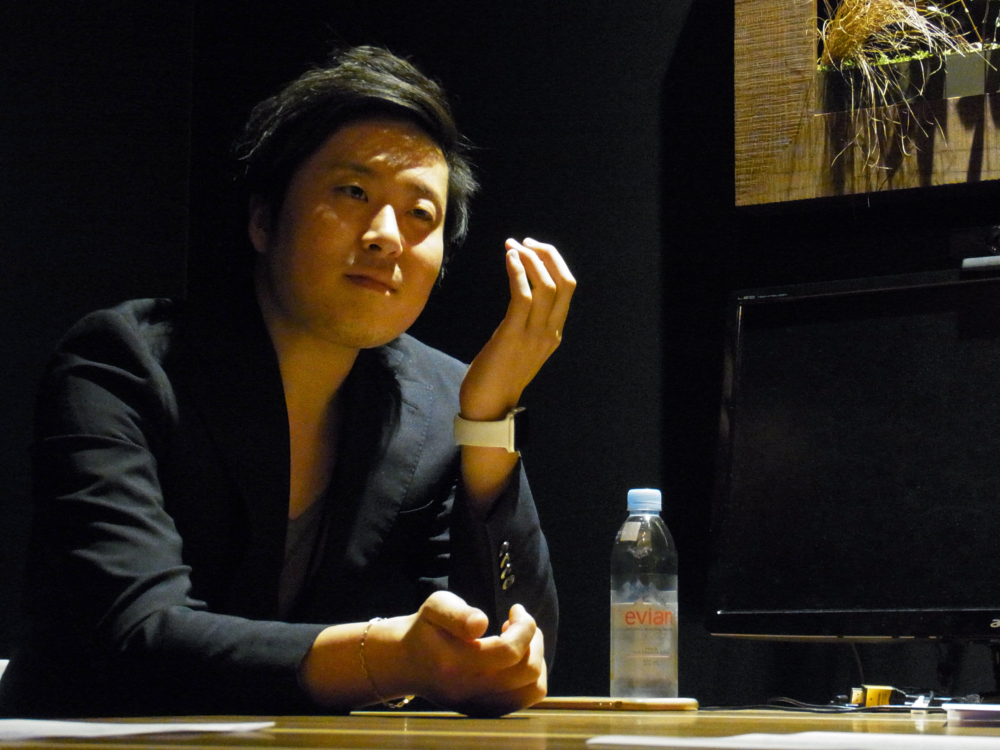
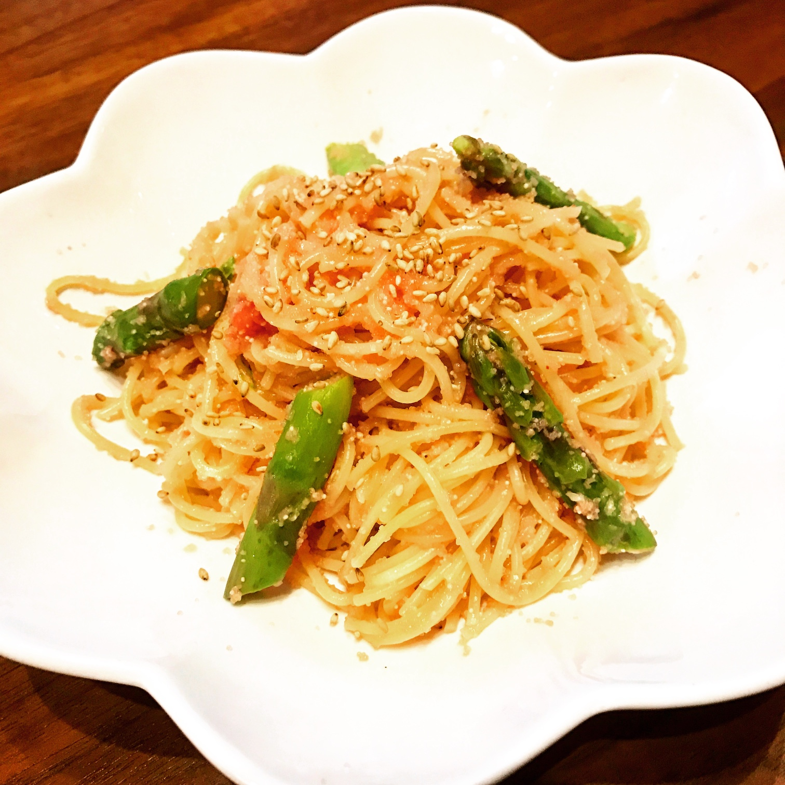
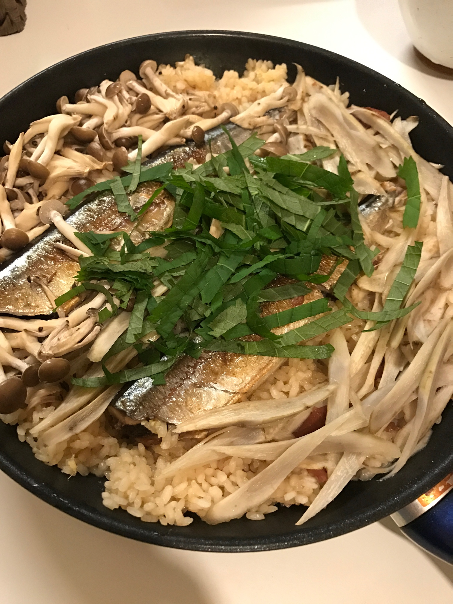
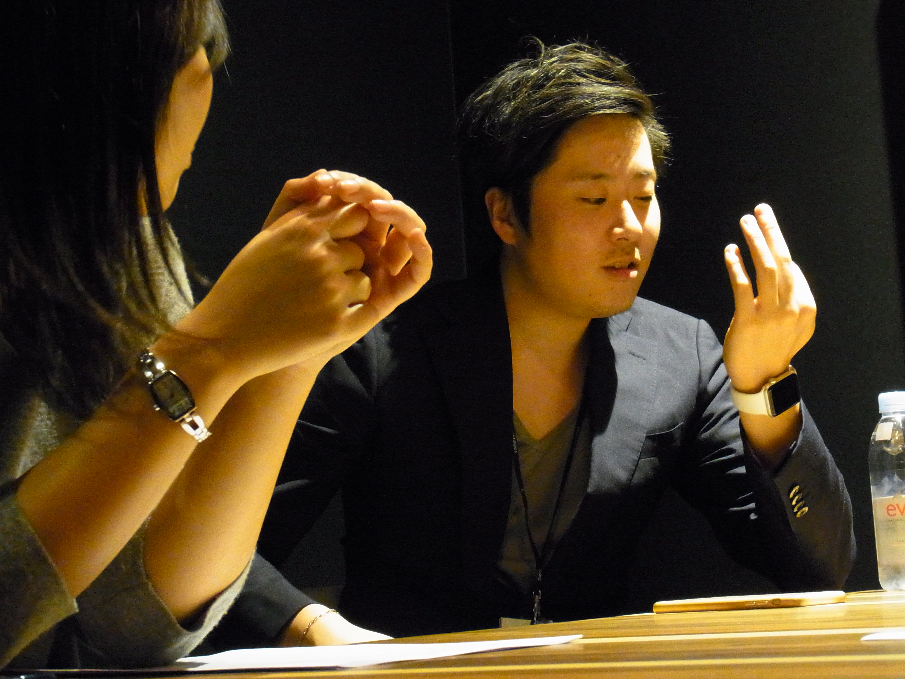
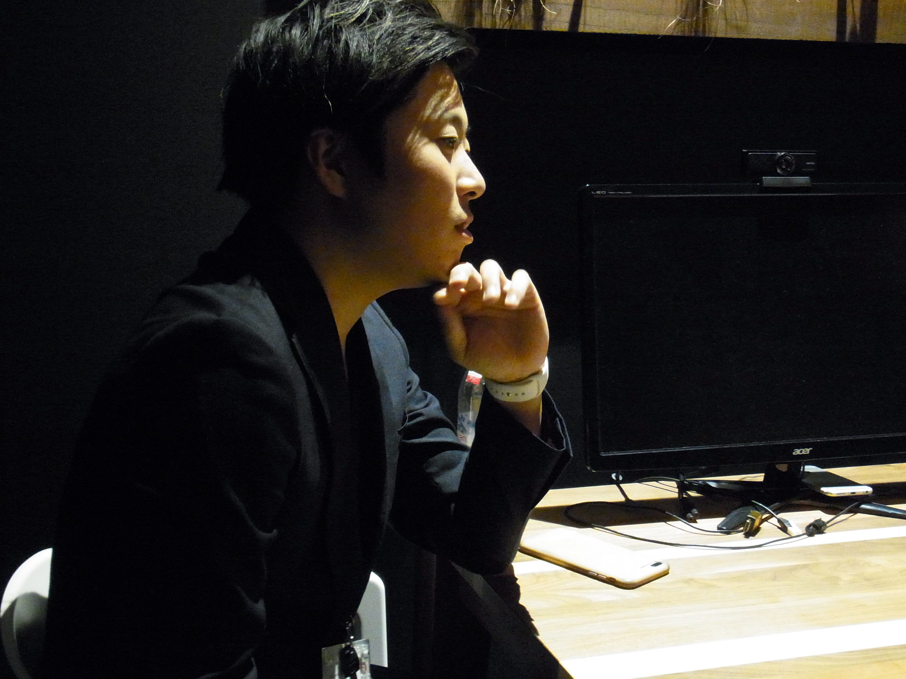

タイトル/品川智哉

導入のコメント
導入のコメント
導入のコメント
導入のコメント
早速ですが、今回突撃してきたのはメディカル大阪・大阪チームのリーダー品川 智哉さんです！
我らが大将、品川さんにたっぷりとお話をお聞きして参りましたので、ぜひ最後までお読みいただければ幸いです！
では参りましょう。品川さんです！

導入のコメント
導入のコメント
導入のコメント
早速ですが、今回突撃してきたのはメディカル大阪・大阪チームのリーダー品川 智哉さんです！
我らが大将、品川さんにたっぷりとお話をお聞きして参りましたので、ぜひ最後までお読みいただければ幸いです！
では参りましょう。品川さんです！

品川 智哉さん / Shinagawa Tomoya
2014年7月入社
前職のマーケティング会社でのスキルを活かし、リーダー候補としてレバレジーズに入社
入社半年でメディカル大阪の京阪チームのリーダーにアサインされる。
昨年2月に第一子をもうけ、現在は一児のパパ。
ー本日はよろしくお願いします。まずは品川さんのお人柄からお伺いできればと思います。
ー普段、仕事以外は何をされていますか？
今11ヶ月の子供がいるので、土日は子供と遊んでることがほとんどですね。
本当にかわいいです。平日は帰るのが遅いので、土日は遊んであげるようにしています。
あとは体を動かすことが好きですね。学生の頃はばりばりとスポーツをしていました。
ーどんなスポーツをされていたんですか？
剣道、水泳、アイスホッケー、フットサル、、、
高校まではずっと学校外の団体でスポーツをしていて、
小学生・中学生の時は剣道と水泳をしていました。
余談ですが、ずっと学校外での団体でスポーツをしていたので、
学校の部活に入ることが憧れでした（笑）
高校に進学した際に、念願の部活に入れるということで、どの部活か迷ったんですが、
経験者が比較的少なく、高校から始める私でも勝負ができるスポーツ、という理由でホッケーにしました。
もちろんやるからには全力で取り組み、結果的には近畿代表にまでなることができましたし、
高校のチームとしても全国大会にでることができました。
大学に進学した後も少しホッケーをやっていたのですが、並行してフットサルもしていました。
理由は大学生となるとフットサルをしていた方がモテると思ったからです、、、（笑）
|  |  |
たらこパスタ |
秋刀魚の混ぜご飯 |
ー趣味はなんですか？
子供が生まれたのがきっかけで、家事手伝いのために料理をするようになりましたね。
かれこれ始めて1年以上になります。
昨日はトン汁を作りました。家庭的ですよね（笑）
料理するのはぜひおすすめしますよ！
料理ってタスク管理が学べるんです。料理の工程とか、何分以内に何をどこまで作るとか。
洗い物も重要なポイントで、片方で料理を作りながら、片方で洗い物をしていかないと、
料理が終わった頃には山積みの洗い物に出くわすことになります（笑）
料理はなにより、作り終わった後に頭がすっきりしますね。
ー早速品川さんのギャップが垣間みえて嬉しいです（笑）
ー次に仕事について聞いていこうと思います。
ーレバに転職を決めた理由はなんですか？
ずばり、一番初めに受けて一番初めに受かったから（笑）
でも、ずっと人材に携わりたいなと思っていたのもありますし、最後は岩槻さんと話したことで決めましたね。
面接の時は、面接室に普通の兄ちゃん（岩槻さん）が入ってきたと思ってちょっとびっくりしましたね（笑）
ーリーダー候補として入られたのですか？
そうですね。
入社後半年間はキャリアアドバイザーをしていて、その後からはリーダーをしていました。
でも、リーダーになる前からリーダーのような業務を請け負っていましたね。
メディカルの読み表を作成したときには、それが評価されてクォーター表彰をしていただきました。
ー品川さんにとって仕事は、生活のどのへんに位置しますか？
ど真ん中ですね（笑）
仕事は好きなのでいくらでも働けるタイプです。
前の会社では忙しさのあまり、完全徹夜をすることが少なくなかったのですが、それでも苦ではなかったです（笑）
今は日をまたぐことがないのでそれと比べるととても良い環境で仕事をさせていただいてます。
でも働こうと思えばもっと働けます。子供ができてからも以外にも全然働き方は変わっていないです（笑）

ー仕事する上でのロールモデルはいますか？
私はレバが３社目なのですが、ロールモデルは1つ目の会社での私の上司ですね。
まったく仕事のことは教えてくれない人でしたけど（笑）
合コンで目の前の女性を2時間で落とすことができれば営業が上手くなる、と教えられて、
実際に合コンでなんどもそのミッションを課されました（笑）
でも、意外にもこの経験は実際に役に立ちましたね。
そんな経験があるので、他もなんでもできるって振り切って考えられるようになりました。
ー具体的にどんなことを学びましたか？
営業は、いかに相手に「ほしい」と思わせるかがポイントだと学びました。
人が行動を起こすのは何かが「ほしい」と感じた瞬間で、
営業の役割はいかに自社の商品を欲しがらせるか、そのためにどういう布石を打つか、
どういう関係を築いていくか、を徹底して考える必要があると感じました。
一度相手を「ほしい」気持ちにされると、こちらから執拗にゴリゴリと商品のPRを行うことも必要なく、
向こうから積極的に動いてくれるようになります。
その経験を経て、営業がとても面白く感じるようになりました。
ー品川さんにとって仕事ができる人ってどういう人ですか？
それぞれのポジションによって異なってくるので一概には言えないですが、
基本的にはヒアリング力、傾聴力ですかね。
人の声を拾う力は大事だと思います。
営業にしてもリーダーにしても経営者にしても、声を拾ってくる相手は異なりますが、
誰かからお金をもらっている、誰かと一緒に仕事をしている以上、
周りの声を的確に聴ける人はどこにいっても仕事ができると思います。

ー仕事を通してやりたいことはありますか？
昔から洋服が好きなので服飾の仕事をいつかしたいなと思ってます。
服飾って業界的に今どんどん縮小してる状況なんですよ。
昔はとても盛り上がりのあった業界で、
高めのブランドものをわざわざ借金してまで買ったり、っていう時代があったりしましたけど、
今はそんなことめったに聞かなくなりましたよね。
なので個人的に洋服の業界を再度盛り上げたいと思っています。
レバでやれたら面白いと思いますけどね（笑）
レバでファッション誌とか出してみたいです。
ー最後にインターン生へ一言
新卒でよく、「ベンチャーだから新しいことをやらせてもらえる！」って思って入社する人が結構いるんですけど、
ベンチャーに入る醍醐味は自己発信が許されることであって、逆に自己発信しない限りなにも降ってはきません。
自分たちで「なにかやりたい！」っていうその機会自体を作るところからやらないと、
ベンチャーに来た意味はないと思います。
それだけは心に留めておいてほしいです。
あと、その上で注意してほしいのは、自己発信したら責任を持ってやり通してください。
みなさんには、言ったからにはやらなきゃいけないっていう気持ちが芽生えてほしいなと思います。
みなさんのご活躍を心から期待しています！！
 |  |